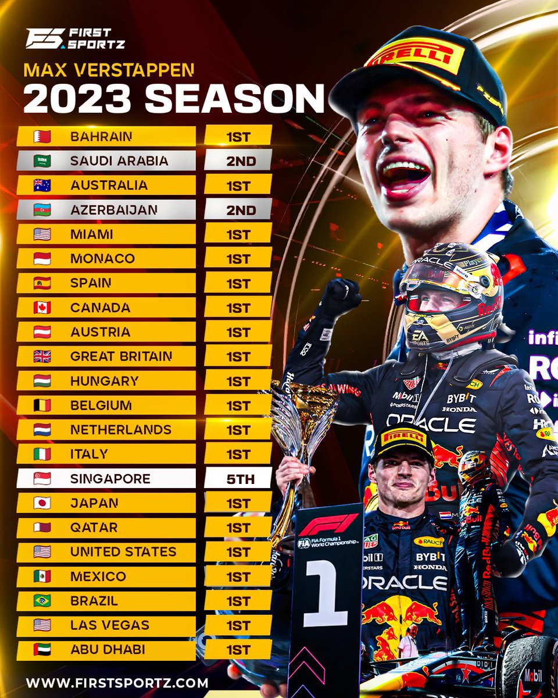

Max Emilian Verstappen is a Dutch and Belgian racing driver who competes under the Dutch flag in Formula One for Red Bull Racing. Verstappen has won four Formula One World Drivers' Championship titles, which he won consecutively from 2021 to 2024 with Red Bull, and has won 71 Grands Prix across 11 seasons
Born: 30 September 1997 (age 28 years), Hasselt, Belgium
Dates joined: 2016 (Red Bull Racing), 2015 (Scuderia Toro Rosso)
Current team: Red Bull Racing
Partner: Kelly Piquet (2020)
Siblings: Victoria Jane Verstappen
Parents: Jos Verstappen, Sophie Kumpen
Height: 1.81 m
Verstappen won his first F1 championship in 2021. At the Bahrain Grand Prix, Verstappen topped all the practice sessions and subsequently took a career fourth pole position. This was the first time he achieved back-to-back pole positions.[180] He fought Lewis Hamilton for the race victory, and on lap 53 Verstappen overtook Hamilton, but went off track whilst doing so, resulting in him being instructed by race control to let Hamilton back into the lead and ultimately finishing second behind Hamilton
March 2022, Verstappen signed a five-year contract extension with Red Bull Racing for the 2023 to 2028 seasons.[228] From this season onward, he would use the number 1 instead of his regular number 33 as the reigning world champion.[229] Verstappen retired from second place at the season-opening Bahrain Grand Prix with a fuel system issue. He won the Saudi Arabian Grand Prix, having benefited from a pit stop during safety car conditions to pass teammate and pole-sitter Pérez, but suffered another fuel-related retirement from second place at the Australian Grand Prix. This left him 46 points behind championship leader Charles Leclerc after three races
Verstappen leading the race at the 2023 Austrian Grand Prix Verstappen remained with Red Bull alongside Sergio Pérez for the 2023 season. His campaign began with a win from pole at the Bahrain Grand Prix. A driveshaft failure in qualifying at the Saudi Arabian Grand Prix resulted in a 15th-place start, but he gained positions in the race to finish second behind Pérez.[238] He again won from pole at the Australian Grand Prix despite losing positions to the Mercedes drivers during the race,[239] but finished second to Pérez, who made a safety car pit stop, at the Azerbaijan Grand Prix.[240]
Verstappen began the 2024 season with his fifth career grand slam at the Bahrain Grand Prix[247] and followed this with another pole and victory at the Saudi Arabian Grand Prix, his 100th Formula One podium.[248] He took pole again at the Australian Grand Prix but retired on lap 4, his first retirement since the 2022 edition of the race, with a brake fire, ending his nine-race winning streak and 43 race-finishing streak.[249] This was followed by a pole and win at the Japanese Grand Prix.[250] He won the sprint at the Chinese Grand Prix after starting fourth,[251] then claimed pole and victory in the race
AWARD AND HONOURS/>| TEAMS | DRIVER | TITLES |
|---|---|---|
| Ferrari | Lewis Hamilton | 16 titles |
| McLaren | Lando Norris | 10 titles |
| Mercedes | George Russell | 8 titles |
| Red Bull | Max Verstappen | 8titles |

The Red Bull Racing RB20 is a championship-winning Formula One car designed and constructed by Red Bull Racing and powered by the Honda RBPTH002 power unit to compete in the 2024 Formula One World Championship. The car, which is the successor to the highly successful Red Bull RB19, was unveiled at the team factory in Milton Keynes on 15 February 2024.[2][3][4] The RB20 was driven by defending World Champion Max Verstappen and teammate Sergio Pérez, the latter in what turned out to be his final season for the team,[5] and made its competitive debut at the 2024 Bahrain Grand Prix. Early-season rounds saw dominant pace, which was confirmed when Red Bull repeated their dominant performances shown throughout the previous year, but as the season progressed, the team found itself pressured and outpaced by rival teams, particularly by McLaren and their MCL38. While the team attempted to introduce upgrades and changes to their car to return to their season-opening dominance, an uptick of performance from McLaren and Ferrari saw them drop to third in the Constructors' Championship. However, Verstappen took two more wins at the São Paulo and Qatar Grands Prix, the former victory contributing to Verstappen ultimately sealing the Drivers' Championship at the following Las Vegas Grand Prix, but even so, Pérez's poor performance in particular - finishing in eighth with 152 points to Verstappen's 437 - meant that Red Bull was knocked out of contention for the Constructors' Championship at the aforementioned Qatar Grand Prix, where, despite Verstappen's victory, Pérez failed to finish the race due to a clutch issue. Ultimately, Red Bull finished in third in the Constructors' Championship behind Ferrari and eventual winners McLaren. The RB20 achieved 9 wins (plus 4 sprint wins, the last being at the United States Grand Prix), 18 podiums, and 8 pole positions – plus 4 sprint pole positions – and it holds 4 fastest laps. The RB20 was the last Red Bull Formula One car to be designed by former Chief Technical Officer Adrian Newey, who left the team for Aston Martin midway through the season.